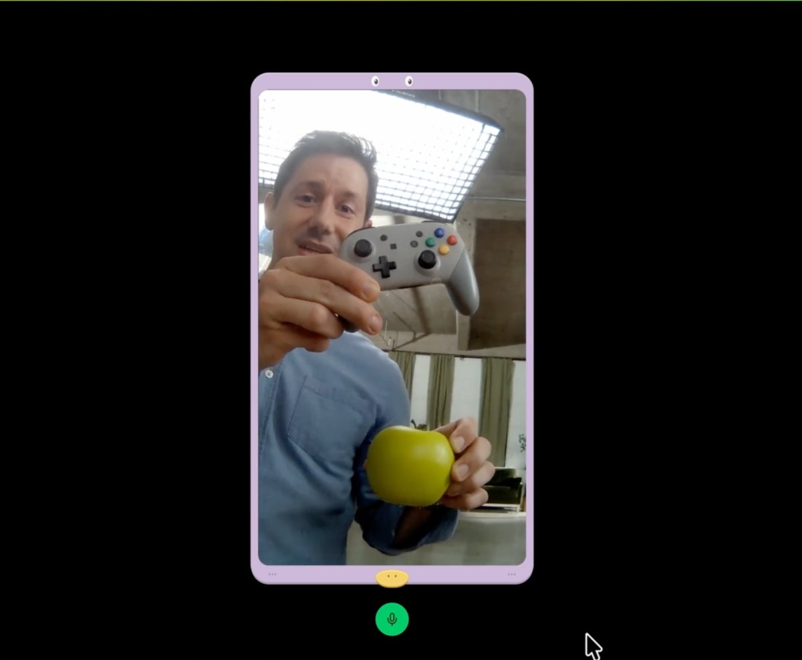

头条 一

图片来源：TechCrunchOpenAI 周四向所有客户开放 Decisions API，由 GPT-6 Luna 改造而来，延迟从一到三秒降到约 100 至 180 毫秒。据 TechCrunch，Speak 把动作间隔从 1.4 秒降到 0.13 秒；但在两个公开榜单上它只排第八和第十四。
这类模型更看重快而不是聪明；TypeSafe 的 Jev 在 OpenRouter 上调用最多，OpenAI 称自己的优势在多模态。
来源：TechCrunch
头条 二
NVIDIA 开源的 OpenShell 在内核层限制智能体能读的文件、能发的系统调用和能连的网络，真实凭据只在访问获批地址时注入。1Password 同日推出 1Password for Agents：智能体登录前须经用户确认，全程拿不到密码。
一个管“能做什么”，一个管“能拿什么”；防范的都是智能体把权限用过头。
来源：TechCrunch / NVIDIA
头条 三
据 CNBC，OpenAI 正筹最多 300 亿美元，投前估值 1.25 万亿，由 Coatue 与阿联酋投资者牵头，条款仍在谈。据纽约邮报转述华尔街日报，Anthropic 招股书草案显示上半年净亏 807 亿美元，主要来自会计项目。
Anthropic 还披露有超过 6000 亿美元的算力租赁承诺，并警告数据中心反对声浪；以上均为报道，非官方文件。
来源：纽约邮报 / TechCrunch
快，是产品卖点；稳，是上线门槛。今天两件事都有人在认真做。
给智能体上锁，防的不是它作恶，而是它把权限用过了头。
上市前的亏损多是会计项目，真正要盯的是算力承诺和数据中心能不能批下来。